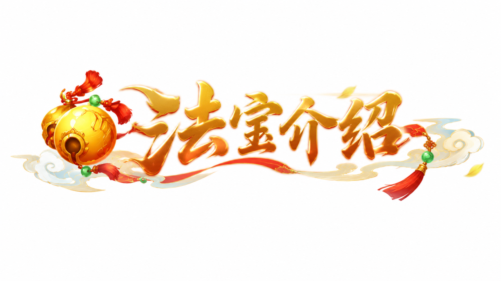
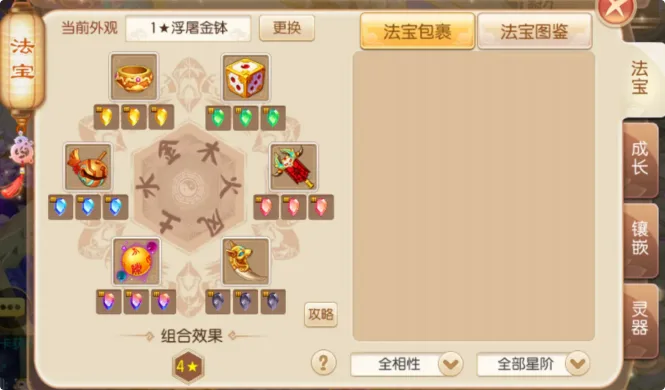
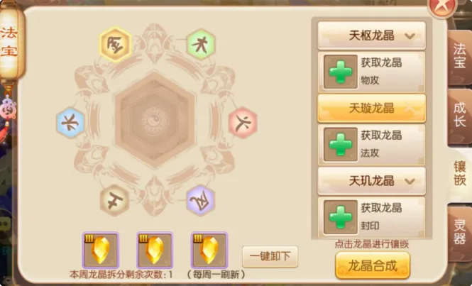
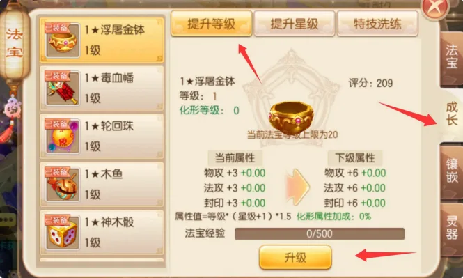
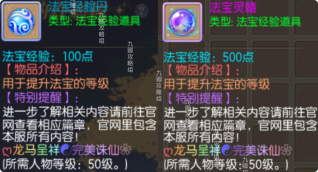
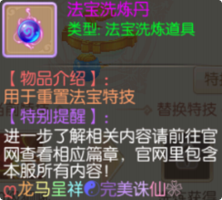
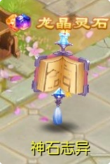
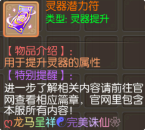

每位玩家目前可以佩戴 6个法宝 ，每样法宝对应的属性都不相同 ，可以全面提升玩家的战力，花费法宝灵髓和法宝经验丹可以对法宝进行升级 ，升级后可以提升法宝自身属性。

每个法宝下方都有 3个格子 ，可以镶嵌对应的龙晶 ，龙晶可以通过商会购买 ，建议输出职业优先提升浮屠金钵的晶石等级 ，因为可以最直观的提升输出能力； 辅助职业建议优先提升防御能力 ，可以先从封抗、气血、物防、法防这些晶石镶嵌。

除此之外 ，还可以消耗同类型法宝或碎片提升法宝星级 ，提升星级不仅可以增加法宝属性 ，同时也可以激活更多的法宝技能呢。


| 法宝等级 | 升级所需法宝经验 | 法宝等级 | 升级所需法宝经验 |
|---|---|---|---|
| 2 级 | 500 | 12 级 | 5500 |
| 3 级 | 1000 | 13 级 | 6000 |
| 4 级 | 1500 | 14 级 | 6500 |
| 5 级 | 2000 | 15 级 | 7000 |
| 6 级 | 2500 | 16 级 | 7500 |
| 7 级 | 3000 | 17 级 | 8000 |
| 8 级 | 3500 | 18 级 | 8500 |
| 9 级 | 4000 | 19 级 | 9000 |
| 10 级 | 4500 | 20 级 | 9500 |
| 11 级 | 5000 | - | - |
| 星级等级 | 所需星级积分 |
|---|---|
| 2★ | 100 |
| 3★ | 300 |
| 4★ | 900 |
| 5★ | 2700 |
| 6★ | 8100 |
| 7★ | 24300 |
| 8★ | 48600 |
| 9★ | 97200 |
| 10★ | 194400 |
| 血炼 1★ | 291600 |
| 血炼 2★ | 388800 |
| 血炼 3★ | 486000 |
| 血炼 4★ | 631800 |
| 血炼 5★ | 777600 |
| 血炼 6★ | 972000 |
| 血炼 7★ | 1968300 |
| 血炼 8★ | 2361960 |
| 血炼 9★ | 2755620 |
| 血炼 10★ | 3149280 |
| 血炼 11★ | 3542940 |
| 血炼 12★ | 3936600 |
| 血炼 13★ | 5136600 |
| 血炼 14★ | 6336600 |
| 血炼 15★ | 7536600 |
| 血炼 17★ | 10000000 |
| 血炼 18★ | 10000000 |
| 血炼 19★ | 10000000 |
| 血炼 20★ | 10000000 |
| 法宝星级 | 升星所需材料 |
|---|---|
| 2★ | 聚星丹 × 1 |
| 3★ | 聚星丹 × 1 |
| 4★ | 聚星丹 × 3 |
| 5★ | 聚星丹 × 5 |
| 6★ | 聚星丹 × 10 |
| 7★ | 高级聚星丹 × 20 |
| 8★ | 高级聚星丹 × 50 |
| 9★ | 高级聚星丹 × 100 |
| 10★ | 高级聚星丹 × 200 |
| 血炼 1★ | 6★法宝 × 1 |
| 血炼 2★ | 高级聚星丹 × 50 |
| 血炼 3★ | 高级聚星丹 × 50 |
| 血炼 4★ | 高级聚星丹 × 100 |
| 血炼 5★ | 高级聚星丹 × 150 |
| 血炼 6★ | 高级聚星丹 × 200 |
| 血炼 7★ | 高级聚星丹 × 250 |
| 血炼 8★ | 高级聚星丹 × 300 |
| 血炼 9★ | 高级聚星丹 × 350 |
| 血炼 10★ | 高级聚星丹 × 400 |
| 血炼 11★ | 高级聚星丹 × 500 |
| 血炼 12★ | 高级聚星丹 × 600 |
| 血炼 13★ | 高级聚星丹 × 700 |
| 血炼 14★ | 高级聚星丹 × 800 |
| 血炼 15★ | 高级聚星丹 × 900 |
| 血炼 17★ | 高级聚星丹 × 1000 |
| 血炼 18★ | 高级聚星丹 × 1000 |
| 血炼 19★ | 高级聚星丹 × 1000 |
| 血炼 20★ | 高级聚星丹 × 1000 |
| 套装星级 | 激活条件 | 套装额外属性 |
|---|---|---|
| 4★套 | 穿戴 6 件不同相性、 ≥4 星法宝 | 气血 + 910 |
| 5★套 | 穿戴 6 件不同相性、 ≥5 星法宝 | 气血 + 910 物攻 + 260、法攻 + 260、封印 + 260 |
| 6★套 | 穿戴 6 件不同相性、 ≥6 星法宝 | 气血 + 910 物攻 + 260、法攻 + 260、封印 + 260 物防 + 130 |
| 7★套 | 穿戴 6 件不同相性、 ≥7 星法宝 | 气血 + 910 物攻 + 260、法攻 + 260、封印 + 260 物防 + 130、法防 + 130 |
| 8★套 | 穿戴 6 件不同相性、 ≥8 星法宝 | 气血 + 910 物攻 + 260、法攻 + 260、封印 + 260 物防 + 130、法防 + 130、物暴效果 + 15.0%、法暴效果 + 15.0% |
| 9★套 | 穿戴 6 件不同相性、 ≥9 星法宝 | 气血 + 910 物攻 + 260、法攻 + 260、封印 + 260 物防 + 130、法防 + 130、物暴效果 + 25.0%、法暴效果 + 25.0% |
| 10★套 | 穿戴 6 件不同相性、 ≥10 星法宝 | 气血 + 910 物攻 + 260、法攻 + 260、封印 + 260 物防 + 130、法防 + 130、物暴效果 + 35.0%、法暴效果 + 35.0% |

1★至 2★均消耗 1 个
3★至 4★均消耗 2 个
5★至 6★均消耗 3 个
7★至 8★均消耗 4 个
9★及更高星级均消耗 5 个
| 名称/等级 | 效果/描述 |
|---|---|
| 1级隐遁 | 使己方目标隐身 2回合并增加逃跑成功率。 |
| 2级隐遁 | 使己方目标隐身 2回合并增加逃跑成功率。 |
| 3级隐遁 | 使己方目标隐身 2回合并增加逃跑成功率。 |
| 4级隐遁 | 使己方目标隐身 3回合并增加逃跑成功率。 |
| 5级隐遁 | 使己方目标隐身 3回合并增加逃跑成功率。 |
| 6级隐遁 | 使己方目标隐身 3回合并增加逃跑成功率。 |
| 7级隐遁 | 使己方目标隐身 4回合并增加逃跑成功率。 |
| 8级隐遁 | 使己方目标隐身 4回合并增加逃跑成功率。 |
| 9级隐遁 | 使己方目标隐身 4回合并增加逃跑成功率。 |
| 10级隐遁 | 使己方目标隐身 5回合并增加逃跑成功率。 |
| 1级金甲 | 提高己方单体目标物理防御 5% ，效果持续到战斗结束 ，效果可以被驱散。 |
| 2级金甲 | 提高己方单体目标物理防御 6% ，效果持续到战斗结束 ，效果可以被驱散。 |
| 3级金甲 | 提高己方单体目标物理防御 7% ，效果持续到战斗结束 ，效果可以被驱散。 |
| 4级金甲 | 提高己方单体目标物理防御 8% ，效果持续到战斗结束 ，效果可以被驱散。 |
| 5级金甲 | 提高己方单体目标物理防御 9% ，效果持续到战斗结束 ，效果可以被驱散。 |
| 6级金甲 | 提高己方单体目标物理防御 10% ，效果持续到战斗结束 ，效果可以被驱散。 |
| 7级金甲 | 提高己方单体目标物理防御 11% ，效果持续到战斗结束 ，效果可以被驱散。 |
| 8级金甲 | 提高己方单体目标物理防御 12% ，效果持续到战斗结束 ，效果可以被驱散。 |
| 9级金甲 | 提高己方单体目标物理防御 13% ，效果持续到战斗结束 ，效果可以被驱散。 |
| 10级金甲 | 提高己方单体目标物理防御 14% ，效果持续到战斗结束 ，效果可以被驱散。 |
| 1级狮吼 | 提高己方单体目标物理伤害 5% ，效果持续到战斗结束 ，效果可以被驱散。 |
| 2级狮吼 | 提高己方单体目标物理伤害 6% ，效果持续到战斗结束 ，效果可以被驱散。 |
| 3级狮吼 | 提高己方单体目标物理伤害 7% ，效果持续到战斗结束 ，效果可以被驱散。 |
| 4级狮吼 | 提高己方单体目标物理伤害 8% ，效果持续到战斗结束 ，效果可以被驱散。 |
| 5级狮吼 | 提高己方单体目标物理伤害 9% ，效果持续到战斗结束 ，效果可以被驱散。 |
| 6级狮吼 | 提高己方单体目标物理伤害10% ，效果持续到战斗结束 ，效果可以被驱散。 |
| 7级狮吼 | 提高己方单体目标物理伤害11% ，效果持续到战斗结束 ，效果可以被驱散。 |
| 8级狮吼 | 提高己方单体目标物理伤害12% ，效果持续到战斗结束 ，效果可以被驱散。 |
| 9级狮吼 | 提高己方单体目标物理伤害13% ，效果持续到战斗结束 ，效果可以被驱散。 |
| 10级狮吼 | 提高己方单体目标物理伤害14% ，效果持续到战斗结束 ，效果可以被驱散。 |
| 1级护卫 | 自己的宠物在主人遭受到攻击时 ，10%概率会执行保护动作 1次 ，效果持续 8回合。 |
| 2级护卫 | 自己的宠物在主人遭受到攻击时 ，20%概率会执行保护动作 2次 ，效果持续 8回合。 |
| 3级护卫 | 自己的宠物在主人遭受到攻击时 ，30%概率会执行保护动作 3次 ，效果持续 8回合。 |
| 4级护卫 | 自己的宠物在主人遭受到攻击时 ，40%概率会执行保护动作 4次 ，效果持续 8回合。 |
| 5级护卫 | 自己的宠物在主人遭受到攻击时 ，50%概率会执行保护动作 5次 ，效果持续 8回合。 |
| 6级护卫 | 自己的宠物在主人遭受到攻击时 ，60%概率会执行保护动作 6次 ，效果持续 8回合。 |
| 7级护卫 | 自己的宠物在主人遭受到攻击时 ，70%概率会执行保护动作 7次 ，效果持续 8回合。 |
| 8级护卫 | 自己的宠物在主人遭受到攻击时 ，80%概率会执行保护动作 8次 ，效果持续 8回合。 |
| 9级护卫 | 自己的宠物在主人遭受到攻击时 ，90%概率会执行保护动作 9次 ，效果持续 8回合。 |
| 10级护卫 | 自己的宠物在主人遭受到攻击时 ，100%概率会执行保护动作 10次 ，效果持续 8回合。 |
| 1级回蓝 | 恢复自身法力上限 10%点法力值。 |
| 2级回蓝 | 恢复自身法力上限 12%点法力值。 |
| 3级回蓝 | 恢复自身法力上限 14%点法力值。 |
| 4级回蓝 | 恢复自身法力上限 16%点法力值。 |
| 5级回蓝 | 恢复自身法力上限 18%点法力值。 |
| 6级回蓝 | 恢复自身法力上限 20%点法力值。 |
| 7级回蓝 | 恢复自身法力上限 22%点法力值。 |
| 8级回蓝 | 恢复自身法力上限 24%点法力值。 |
| 9级回蓝 | 恢复自身法力上限 26%点法力值。 |
| 10级回蓝 | 恢复自身法力上限 28%点法力值。 |
| 1级治愈 | 恢复己方单体目标气血上限 1.5%+100点气血值。 |
| 2级治愈 | 恢复己方单体目标气血上限 3%+200点气血值。 |
| 3级治愈 | 恢复己方单体目标气血上限 4.5%+300点气血值。 |
| 4级治愈 | 恢复己方单体目标气血上限 6%+400点气血值。 |
| 5级治愈 | 恢复己方单体目标气血上限 7.5%+500点气血值。 |
| 6级治愈 | 恢复己方单体目标气血上限 9%+600点气血值。 |
| 7级治愈 | 恢复己方单体目标气血上限 10.5%+700点气血值。 |
| 8级治愈 | 恢复己方单体目标气血上限 12%+800点气血值。 |
| 9级治愈 | 恢复己方单体目标气血上限 13.5%+900点气血值。 |
| 10级治愈 | 恢复己方单体目标气血上限 15%+1000点气血值。 |
| 1级重伤 | 减少敌方单体目标气血上限 2%的气血值 ，不能对怪物使用。 |
| 2级重伤 | 减少敌方单体目标气血上限 4%的气血值 ，不能对怪物使用。 |
| 3级重伤 | 减少敌方单体目标气血上限 6%的气血值 ，不能对怪物使用。 |
| 4级重伤 | 减少敌方单体目标气血上限 8%的气血值 ，不能对怪物使用。 |
| 5级重伤 | 减少敌方单体目标气血上限 10%的气血值 ，不能对怪物使用。 |
| 6级重伤 | 减少敌方单体目标气血上限 12%的气血值 ，不能对怪物使用。 |
| 7级重伤 | 减少敌方单体目标气血上限 14%的气血值 ，不能对怪物使用。 |
| 8级重伤 | 减少敌方单体目标气血上限 16%的气血值 ，不能对怪物使用。 |
| 9级重伤 | 减少敌方单体目标气血上限 18%的气血值 ，不能对怪物使用。 |
| 10级重伤 | 减少敌方单体目标气血上限 20%的气血值 ，不能对怪物使用。 |
| 1级技巧 | 使己方单体目标免疫物理与法术反击 ，持续 3回合。 |
| 2级技巧 | 使己方单体目标免疫物理与法术反击 ，持续 3回合。 |
| 3级技巧 | 使己方单体目标免疫物理与法术反击 ，持续 3回合。 |
| 4级技巧 | 使己方单体目标免疫物理与法术反击 ，持续 5回合。 |
| 5级技巧 | 使己方单体目标免疫物理与法术反击 ，持续 5回合。 |
| 6级技巧 | 使己方单体目标免疫物理与法术反击 ，持续 5回合。 |
| 7级技巧 | 使己方单体目标免疫物理与法术反击 ，持续 8回合。 |
| 8级技巧 | 使己方单体目标免疫物理与法术反击 ，持续 8回合。 |
| 9级技巧 | 使己方单体目标免疫物理与法术反击 ，持续 8回合。 |
| 10级技巧 | 使己方单体目标免疫物理与法术反击 ，持续 8回合。 |
| 1级乾坤 | 当自身气血值不低于 30%时 ，与敌方单体目标交换生命和法力的百分比 ，只能对玩家使用 ，使用后休息 1回合。 |
| 2级乾坤 | 当自身气血值不低于 27%时 ，与敌方单体目标交换生命和法力的百分比 ，只能对玩家使用 ，使用后休息 1回合。 |
| 3级乾坤 | 当自身气血值不低于 24%时 ，与敌方单体目标交换生命和法力的百分比 ，只能对玩家使用 ，使用后休息 1回合。 |
| 4级乾坤 | 当自身气血值不低于 21%时 ，与敌方单体目标交换生命和法力的百分比 ，只能对玩家使用 ，使用后休息 1回合。 |
| 5级乾坤 | 当自身气血值不低于 18%时 ，与敌方单体目标交换生命和法力的百分比 ，只能对玩家使用 ，使用后休息 1回合。 |
| 6级乾坤 | 当自身气血值不低于 15%时 ，与敌方单体目标交换生命和法力的百分比 ，只能对玩家使用 ，使用后休息 1回合。 |
| 7级乾坤 | 当自身气血值不低于 12%时 ，与敌方单体目标交换生命和法力的百分比 ，只能对玩家使用 ，使用后休息 1回合。 |
| 8级乾坤 | 当自身气血值不低于 9%时 ，与敌方单体目标交换生命和法力的百分比 ，只能对玩家使用 ，使用后休息 1回合。 |
| 9级乾坤 | 当自身气血值不低于 7%时 ，与敌方单体目标交换生命和法力的百分比 ，只能对玩家使用 ，使用后休息 1回合。 |
| 10级乾坤 | 当自身气血值不低于 5%时 ，与敌方单体目标交换生命和法力的百分比 ，只能对玩家使用 ，使用后休息 1回合。 |
| 名称/等级 | 效果/描述 |
|---|---|
| 1级自疗 | 恢复自身气血上限 5%的气血值 ，但不超过被恢复者等级 *15。 |
| 2级自疗 | 恢复自身气血上限 10%的气血值 ，但不超过被恢复者等级 *30。 |
| 3级自疗 | 恢复自身气血上限 15%的气血值 ，但不超过被恢复者等级 *45。 |
| 4级自疗 | 恢复自身气血上限 20%的气血值 ，但不超过被恢复者等级 *60。 |
| 5级自疗 | 恢复自身气血上限 25%的气血值 ，但不超过被恢复者等级 *75。 |
| 6级自疗 | 恢复自身气血上限 30%的气血值 ，但不超过被恢复者等级 *90。 |
| 7级自疗 | 恢复自身气血上限 35%的气血值 ，但不超过被恢复者等级*105。 |
| 8级自疗 | 恢复自身气血上限 40%的气血值 ，但不超过被恢复者等级*120。 |
| 9级自疗 | 恢复自身气血上限 45%的气血值 ，但不超过被恢复者等级*135。 |
| 10级自疗 | 恢复自身气血上限 50%的气血值 ，但不超过被恢复者等级*150。 |
| 1级破法 | 降低敌方单体法术防御 5% ，效果会持续到战斗结束。 |
| 2级破法 | 降低敌方单体法术防御 6% ，效果会持续到战斗结束。 |
| 3级破法 | 降低敌方单体法术防御 7% ，效果会持续到战斗结束。 |
| 4级破法 | 降低敌方单体法术防御 8% ，效果会持续到战斗结束。 |
| 5级破法 | 降低敌方单体法术防御 9% ，效果会持续到战斗结束。 |
| 6级破法 | 降低敌方单体法术防御 10% ，效果会持续到战斗结束。 |
| 7级破法 | 降低敌方单体法术防御 11% ，效果会持续到战斗结束。 |
| 8级破法 | 降低敌方单体法术防御 12% ，效果会持续到战斗结束。 |
| 9级破法 | 降低敌方单体法术防御 13% ，效果会持续到战斗结束。 |
| 10级破法 | 降低敌方单体法术防御 14% ，效果会持续到战斗结束。 |
| 1级破防 | 降低敌方单体物理防御 5% ，效果会持续到战斗结束。 |
| 2级破防 | 降低敌方单体物理防御 6% ，效果会持续到战斗结束。 |
| 3级破防 | 降低敌方单体物理防御 7% ，效果会持续到战斗结束。 |
| 4级破防 | 降低敌方单体物理防御 8% ，效果会持续到战斗结束。 |
| 5级破防 | 降低敌方单体物理防御 9% ，效果会持续到战斗结束。 |
| 6级破防 | 降低敌方单体物理防御 10% ，效果会持续到战斗结束。 |
| 7级破防 | 降低敌方单体物理防御 11% ，效果会持续到战斗结束。 |
| 8级破防 | 降低敌方单体物理防御 12% ，效果会持续到战斗结束。 |
| 9级破防 | 降低敌方单体物理防御 13% ，效果会持续到战斗结束。 |
| 10级破防 | 降低敌方单体物理防御 14% ，效果会持续到战斗结束。 |
| 1级龙吼 | 提高己方全体目标物理伤害 4% ，效果持续到战斗结束 ，效果可以被驱散。 |
| 2级龙吼 | 提高己方全体目标物理伤害 4.5% ，效果持续到战斗结束 ，效果可以被驱散。 |
| 3级龙吼 | 提高己方全体目标物理伤害 5% ，效果持续到战斗结束 ，效果可以被驱散。 |
| 4级龙吼 | 提高己方全体目标物理伤害 5.5% ，效果持续到战斗结束 ，效果可以被驱散。 |
| 5级龙吼 | 提高己方全体目标物理伤害 6% ，效果持续到战斗结束 ，效果可以被驱散。 |
| 6级龙吼 | 提高己方全体目标物理伤害 6.5% ，效果持续到战斗结束 ，效果可以被驱散。 |
| 7级龙吼 | 提高己方全体目标物理伤害 7% ，效果持续到战斗结束 ，效果可以被驱散。 |
| 8级龙吼 | 提高己方全体目标物理伤害 7.5% ，效果持续到战斗结束 ，效果可以被驱散。 |
| 9级龙吼 | 提高己方全体目标物理伤害 8% ，效果持续到战斗结束 ，效果可以被驱散。 |
| 10级龙吼 | 提高己方全体目标物理伤害 8.5% ，效果持续到战斗结束 ，效果可以被驱散。 |
| 1级精妙 | 对敌方单体目标进行两次法术攻击 ，伤害结果降低 45%。 |
| 2级精妙 | 对敌方单体目标进行两次法术攻击 ，伤害结果降低 40%。 |
| 3级精妙 | 对敌方单体目标进行两次法术攻击 ，伤害结果降低 35%。 |
| 4级精妙 | 对敌方单体目标进行两次法术攻击 ，伤害结果降低 30%。 |
| 5级精妙 | 对敌方单体目标进行两次法术攻击 ，伤害结果降低 25%。 |
| 6级精妙 | 对敌方单体目标进行两次法术攻击 ，伤害结果降低 20%。 |
| 7级精妙 | 对敌方单体目标进行两次法术攻击 ，伤害结果降低 15%。 |
| 8级精妙 | 对敌方单体目标进行两次法术攻击 ，伤害结果降低 10%。 |
| 9级精妙 | 对敌方单体目标进行两次法术攻击 ，伤害结果降低 5%。 |
| 10级精妙 | 对敌方单体目标进行两次法术攻击。 |
| 1级迟钝 | 降低敌方单体目标速度 2% ，效果会持续到战斗结束。 |
| 2级迟钝 | 降低敌方单体目标速度 4% ，效果会持续到战斗结束。 |
| 3级迟钝 | 降低敌方单体目标速度 6% ，效果会持续到战斗结束。 |
| 4级迟钝 | 降低敌方单体目标速度 8% ，效果会持续到战斗结束。 |
| 5级迟钝 | 降低敌方单体目标速度 10% ，效果会持续到战斗结束。 |
| 6级迟钝 | 降低敌方单体目标速度 12% ，效果会持续到战斗结束。 |
| 7级迟钝 | 降低敌方单体目标速度 14% ，效果会持续到战斗结束。 |
| 8级迟钝 | 降低敌方单体目标速度 16% ，效果会持续到战斗结束。 |
| 9级迟钝 | 降低敌方单体目标速度 18% ，效果会持续到战斗结束。 |
| 10级迟钝 | 降低敌方单体目标速度 20% ，效果会持续到战斗结束。 |
| 1级坚定 | 自身免疫一切毒、负面、 封印和辅助效果 ，持续 2回合。 |
| 2级坚定 | 自身免疫一切毒、负面、 封印和辅助效果 ，持续 2回合。 |
| 3级坚定 | 自身免疫一切毒、负面、 封印和辅助效果 ，持续 2回合。 |
| 4级坚定 | 自身免疫一切毒、负面、 封印和辅助效果 ，持续 3回合。 |
| 5级坚定 | 自身免疫一切毒、负面、 封印和辅助效果 ，持续 3回合。 |
| 6级坚定 | 自身免疫一切毒、负面、 封印和辅助效果 ，持续 3回合。 |
| 7级坚定 | 自身免疫一切毒、负面、 封印和辅助效果 ，持续 3回合。 |
| 8级坚定 | 自身免疫一切毒、负面、 封印和辅助效果 ，持续 4回合。 |
| 9级坚定 | 自身免疫一切毒、负面、 封印和辅助效果 ，持续 4回合。 |
| 10级坚定 | 自身免疫一切毒、负面、 封印和辅助效果 ，持续 4回合。 |
| 1级吸血 | 减少敌方单体目标气血上限 2%的气血值 ，同时恢复自身气血上限 2%的气血值 ，不能对怪物使用。 |
| 2级吸血 | 减少敌方单体目标气血上限 4%的气血值 ，同时恢复自身气血上限 4%的气血值 ，不能对怪物使用。 |
| 3级吸血 | 减少敌方单体目标气血上限 6%的气血值 ，同时恢复自身气血上限 6%的气血值 ，不能对怪物使用。 |
| 4级吸血 | 减少敌方单体目标气血上限 8%的气血值 ，同时恢复自身气血上限 8%的气血值 ，不能对怪物使用。 |
| 5级吸血 | 减少敌方单体目标气血上限 10%的气血值 ，同时恢复自身气血上限 10%的气血值 ，不能对怪物使用。 |
| 6级吸血 | 减少敌方单体目标气血上限 12%的气血值 ，同时恢复自身气血上限 12%的气血值 ，不能对怪物使用。 |
| 7级吸血 | 减少敌方单体目标气血上限 14%的气血值 ，同时恢复自身气血上限 14%的气血值 ，不能对怪物使用。 |
| 8级吸血 | 减少敌方单体目标气血上限 16%的气血值 ，同时恢复自身气血上限 16%的气血值 ，不能对怪物使用。 |
| 9级吸血 | 减少敌方单体目标气血上限 18%的气血值 ，同时恢复自身气血上限 18%的气血值 ，不能对怪物使用。 |
| 10级吸血 | 减少敌方单体目标气血上限 20%的气血值 ，同时恢复自身气血上限 20%的气血值 ，不能对怪物使用。 |
| 名称/等级 | 效果/描述 |
|---|---|
| 1级驱鬼 | 攻击拥有鬼魅技能宠物时增加一定伤害并将其打出战斗外 ，持续2回合。 |
| 2级驱鬼 | 攻击拥有鬼魅技能宠物时增加一定伤害并将其打出战斗外 ，持续2回合。 |
| 3级驱鬼 | 攻击拥有鬼魅技能宠物时增加一定伤害并将其打出战斗外 ，持续3回合。 |
| 4级驱鬼 | 攻击拥有鬼魅技能宠物时增加一定伤害并将其打出战斗外 ，持续3回合。 |
| 5级驱鬼 | 攻击拥有鬼魅技能宠物时增加一定伤害并将其打出战斗外 ，持续4回合。 |
| 6级驱鬼 | 攻击拥有鬼魅技能宠物时增加一定伤害并将其打出战斗外 ，持续4回合。 |
| 7级驱鬼 | 攻击拥有鬼魅技能宠物时增加一定伤害并将其打出战斗外 ，持续5回合。 |
| 8级驱鬼 | 攻击拥有鬼魅技能宠物时增加一定伤害并将其打出战斗外 ，持续6回合。 |
| 9级驱鬼 | 攻击拥有鬼魅技能宠物时增加一定伤害并将其打出战斗外 ，持续7回合。 |
| 10级驱鬼 | 攻击拥有鬼魅技能宠物时增加一定伤害并将其打出战斗外 ，持续8回合。 |
| 1级恐吓 | 降低敌方单个召唤兽 1.5%的伤害效果 ，效果持续 4回合 ，并且首回合有 3%概率使其逃跑。 |
| 2级恐吓 | 降低敌方单个召唤兽 3%的伤害效果 ，效果持续 4回合 ，并且首回合有 6%概率使其逃跑。 |
| 3级恐吓 | 降低敌方单个召唤兽 4.5%的伤害效果 ，效果持续 4回合 ，并且首回合有 9%概率使其逃跑。 |
| 4级恐吓 | 降低敌方单个召唤兽 6%的伤害效果 ，效果持续 4回合 ，并且首回合有 12%概率使其逃跑。 |
| 5级恐吓 | 降低敌方单个召唤兽 7.5%的伤害效果 ，效果持续 4回合 ，并且首回合有 15%概率使其逃跑。 |
| 6级恐吓 | 降低敌方单个召唤兽 9%的伤害效果 ，效果持续 4回合 ，并且首回合有 18%概率使其逃跑。 |
| 7级恐吓 | 降低敌方单个召唤兽 10.5%的伤害效果 ，效果持续 4回合 ，并且首回合有 21%概率使其逃跑。 |
| 8级恐吓 | 降低敌方单个召唤兽 12%的伤害效果 ，效果持续 4回合 ，并且首回合有 24%概率使其逃跑。 |
| 9级恐吓 | 降低敌方单个召唤兽 13.5%的伤害效果 ，效果持续 4回合 ，并且首回合有 27%概率使其逃跑。 |
| 10级恐吓 | 降低敌方单个召唤兽 15%的伤害效果 ，效果持续 4回合 ，并且有 30%概率使其逃跑。 |
| 1级咆哮 | 提高己方单体目标法术伤害 5% ，效果持续到战斗结束 ，效果可以被驱散。 |
| 2级咆哮 | 提高己方单体目标法术伤害 6% ，效果持续到战斗结束 ，效果可以被驱散。 |
| 3级咆哮 | 提高己方单体目标法术伤害 7% ，效果持续到战斗结束 ，效果可以被驱散。 |
| 4级咆哮 | 提高己方单体目标法术伤害 8% ，效果持续到战斗结束 ，效果可以被驱散。 |
| 5级咆哮 | 提高己方单体目标法术伤害 9% ，效果持续到战斗结束 ，效果可以被驱散。 |
| 6级咆哮 | 提高己方单体目标法术伤害10% ，效果持续到战斗结束 ，效果可以被驱散。 |
| 7级咆哮 | 提高己方单体目标法术伤害11% ，效果持续到战斗结束 ，效果可以被驱散。 |
| 8级咆哮 | 提高己方单体目标法术伤害12% ，效果持续到战斗结束 ，效果可以被驱散。 |
| 9级咆哮 | 提高己方单体目标法术伤害13% ，效果持续到战斗结束 ，效果可以被驱散。 |
| 10级咆哮 | 提高己方单体目标法术伤害14% ，效果持续到战斗结束 ，效果可以被驱散。 |
| 1级治疗 | 恢复己方单体目标气血上限 1%+100点气血值。 |
| 2级治疗 | 恢复己方单体目标气血上限 2%+200点气血值。 |
| 3级治疗 | 恢复己方单体目标气血上限 3%+300点气血值。 |
| 4级治疗 | 恢复己方单体目标气血上限 4%+400点气血值。 |
| 5级治疗 | 恢复己方单体目标气血上限 5%+500点气血值。 |
| 6级治疗 | 恢复己方单体目标气血上限 6%+600点气血值。 |
| 7级治疗 | 恢复己方单体目标气血上限 7%+700点气血值。 |
| 8级治疗 | 恢复己方单体目标气血上限 8%+800点气血值。 |
| 9级治疗 | 恢复己方单体目标气血上限 9%+900点气血值。 |
| 10级治疗 | 恢复己方单体目标气血上限 10%+1000点气血值。 |
| 1级猛击 | 临时提高自身 5%攻击力攻击目标 1次。 |
| 2级猛击 | 临时提高自身 10%攻击力攻击目标 1次。 |
| 3级猛击 | 临时提高自身 15%攻击力攻击目标 1次。 |
| 4级猛击 | 临时提高自身 20%攻击力攻击目标 1次。 |
| 5级猛击 | 临时提高自身 25%攻击力攻击目标 1次。 |
| 6级猛击 | 临时提高自身 30%攻击力攻击目标 1次。 |
| 7级猛击 | 临时提高自身 35%攻击力攻击目标 1次。 |
| 8级猛击 | 临时提高自身 40%攻击力攻击目标 1次。 |
| 9级猛击 | 临时提高自身 45%攻击力攻击目标 1次。 |
| 10级猛击 | 临时提高自身 50%攻击力攻击目标 1次。 |
| 1级群疗 | 恢复己方队友气血上限 5%的气血值 ，但不超过被恢复者等级*15。 |
| 2级群疗 | 恢复己方队友气血上限 10%的气血值 ，但不超过被恢复者等级*30。 |
| 3级群疗 | 恢复己方队友气血上限 15%的气血值 ，但不超过被恢复者等级*45。 |
| 4级群疗 | 恢复己方队友气血上限 20%的气血值 ，但不超过被恢复者等级*60。 |
| 5级群疗 | 恢复己方队友气血上限 25%的气血值 ，但不超过被恢复者等级*75。 |
| 6级群疗 | 恢复己方队友气血上限 30%的气血值 ，但不超过被恢复者等级*90。 |
| 7级群疗 | 恢复己方队友气血上限 35%的气血值 ，但不超过被恢复者等级*105。 |
| 8级群疗 | 恢复己方队友气血上限 40%的气血值 ，但不超过被恢复者等级*120。 |
| 9级群疗 | 恢复己方队友气血上限 45%的气血值 ，但不超过被恢复者等级*135。 |
| 10级群疗 | 恢复己方队友气血上限 50%的气血值 ，但不超过被恢复者等级*150。 |
| 1级丧志 | 减少敌方单体目标 10点怒气值。 |
| 2级丧志 | 减少敌方单体目标 20点怒气值。 |
| 3级丧志 | 减少敌方单体目标 30点怒气值。 |
| 4级丧志 | 减少敌方单体目标 40点怒气值。 |
| 5级丧志 | 减少敌方单体目标 50点怒气值。 |
| 6级丧志 | 减少敌方单体目标 60点怒气值。 |
| 7级丧志 | 减少敌方单体目标 70点怒气值。 |
| 8级丧志 | 减少敌方单体目标 80点怒气值。 |
| 9级丧志 | 减少敌方单体目标 90点怒气值。 |
| 10级丧志 | 减少敌方单体目标 100点怒气值。 |
| 1级解封 | 解除己方目标所有中毒状态并恢复 2%气血值 ，最多不超过角色等级 *4。 |
| 2级解封 | 解除己方目标所有中毒状态并恢复 4%气血值 ，最多不超过角色等级 *8。 |
| 3级解封 | 解除己方目标所有中毒状态并恢复 6%气血值 ，最多不超过角色等级 *12。 |
| 4级解封 | 解除己方目标所有中毒状态并恢复 8%气血值 ，最多不超过角色等级 *16。 |
| 5级解封 | 解除己方目标所有中毒、负面状态并恢复 10%气血值 ，最多不超过角色等级 *20。 |
| 6级解封 | 解除己方目标所有中毒、负面状态并恢复 12%气血值 ，最多不超过角色等级 *24。 |
| 7级解封 | 解除己方目标所有中毒、负面状态并恢复 14%气血值 ，最多不超过角色等级 *28。 |
| 8级解封 | 解除己方目标所有中毒、负面、 封印状态并恢复 16%气血值 ，最多不超过角色等级 *32。 |
| 9级解封 | 解除己方目标所有中毒、负面、 封印状态并恢复 18%气血值 ，最多不超过角色等级 *36。 |
| 10级解封 | 解除己方目标所有中毒、负面、 封印状态并恢复 20%气血值 ，最多不超过角色等级 *40。 |
| 1级嘲讽 | 嘲讽敌方单体目标 ，有 30%几率让敌方对自己进行物理攻击 ，效果持续 2回合。 |
| 2级嘲讽 | 嘲讽敌方单体目标 ，有 35%几率让敌方对自己进行物理攻击 ，效果持续 2回合。 |
| 3级嘲讽 | 嘲讽敌方单体目标 ，有 40%几率让敌方对自己进行物理攻击 ，效果持续 2回合。 |
| 4级嘲讽 | 嘲讽敌方单体目标 ，有 50%几率让敌方对自己进行物理攻击 ，效果持续 2回合。 |
| 5级嘲讽 | 嘲讽敌方单体目标 ，有 55%几率让敌方对自己进行物理攻击 ，效果持续 2回合。 |
| 6级嘲讽 | 嘲讽敌方单体目标 ，有 60%几率让敌方对自己进行物理攻击 ，效果持续 2回合。 |
| 7级嘲讽 | 嘲讽敌方单体目标 ，有 65%几率让敌方对自己进行物理攻击 ，效果持续 2回合。 |
| 8级嘲讽 | 嘲讽敌方单体目标 ，有 70%几率让敌方对自己进行物理攻击 ，效果持续 2回合。 |
| 9级嘲讽 | 嘲讽敌方单体目标 ，有 75%几率让敌方对自己进行物理攻击 ，效果持续 2回合。 |
| 10级嘲讽 | 嘲讽敌方单体目标 ，有 80%几率让敌方对自己进行物理攻击 ，效果持续 2回合。 |
| 名称/等级 | 效果/描述 |
|---|---|
| 1级波动 | 小幅度改变己方单体目标的伤害波动范围 91%-112% ，持续 6回合。 |
| 2级波动 | 小幅度改变己方单体目标的伤害波动范围 92%-114% ，持续 6回合。 |
| 3级波动 | 小幅度改变己方单体目标的伤害波动范围 93%-116% ，持续 6回合。 |
| 4级波动 | 小幅度改变己方单体目标的伤害波动范围 94%-118% ，持续 6回合。 |
| 5级波动 | 小幅度改变己方单体目标的伤害波动范围 95%-120% ，持续 6回合。 |
| 6级波动 | 小幅度改变己方单体目标的伤害波动范围 96%-122% ，持续 6回合。 |
| 7级波动 | 小幅度改变己方单体目标的伤害波动范围 97%-124% ，持续 6回合。 |
| 8级波动 | 小幅度改变己方单体目标的伤害波动范围 98%-126% ，持续 6回合。 |
| 9级波动 | 小幅度改变己方单体目标的伤害波动范围 99%-128% ，持续 6回合。 |
| 10级波动 | 小幅度改变己方单体目标的伤害波动范围100%-130% ，持续 6回合。 |
| 1级法抗 | 己方单体目标受到的法术伤害降低 5% ，效果持续 3回合 ，效果可以被驱散。 |
| 2级法抗 | 己方单体目标受到的法术伤害降低 13% ，效果持续 3回合 ，效果可以被驱散。 |
| 3级法抗 | 己方单体目标受到的法术伤害降低 21% ，效果持续 3回合 ，效果可以被驱散。 |
| 4级法抗 | 己方单体目标受到的法术伤害降低 29% ，效果持续 3回合 ，效果可以被驱散。 |
| 5级法抗 | 己方单体目标受到的法术伤害降低 37% ，效果持续 3回合 ，效果可以被驱散。 |
| 6级法抗 | 己方单体目标受到的法术伤害降低 45% ，效果持续 3回合 ，效果可以被驱散。 |
| 7级法抗 | 己方单体目标受到的法术伤害降低 53% ，效果持续 3回合 ，效果可以被驱散。 |
| 8级法抗 | 己方单体目标受到的法术伤害降低 61% ，效果持续 3回合 ，效果可以被驱散。 |
| 9级法抗 | 己方单体目标受到的法术伤害降低 69% ，效果持续 3回合 ，效果可以被驱散。 |
| 10级法抗 | 己方单体目标受到的法术伤害降低 77% ，效果持续 3回合 ，效果可以被驱散。 |
| 1级自愈 | 恢复自身气血上限 10%的气血值 ，但不超过被恢复者等级 *30。 |
| 2级自愈 | 恢复自身气血上限 20%的气血值 ，但不超过被恢复者等级 *60。 |
| 3级自愈 | 恢复自身气血上限 30%的气血值 ，但不超过被恢复者等级 *90。 |
| 4级自愈 | 恢复自身气血上限 40%的气血值 ，但不超过被恢复者等级*120。 |
| 5级自愈 | 恢复自身气血上限 50%的气血值 ，但不超过被恢复者等级*150。 |
| 6级自愈 | 恢复自身气血上限 60%的气血值 ，但不超过被恢复者等级*180。 |
| 7级自愈 | 恢复自身气血上限 70%的气血值 ，但不超过被恢复者等级*210。 |
| 8级自愈 | 恢复自身气血上限 80%的气血值 ，但不超过被恢复者等级*240。 |
| 9级自愈 | 恢复自身气血上限 90%的气血值 ，但不超过被恢复者等级*270。 |
| 10级自愈 | 恢复自身气血上限 100%的气血值 ，但不超过被恢复者等级*300。 |
| 1级损耗 | 50%几率使敌方单体目标使用技能和特技的消耗增加10% ，持续 5回合。 |
| 2级损耗 | 55%几率使敌方单体目标使用技能和特技的消耗增加 20% ，持续 5回合。 |
| 3级损耗 | 60%几率使敌方单体目标使用技能和特技的消耗增加 30% ，持续 5回合。 |
| 4级损耗 | 65%几率使敌方单体目标使用技能和特技的消耗增加 40% ，持续 5回合。 |
| 5级损耗 | 70%几率使敌方单体目标使用技能和特技的消耗增加 50% ，持续 5回合。 |
| 6级损耗 | 75%几率使敌方单体目标使用技能和特技的消耗增加 60% ，持续 5回合。 |
| 7级损耗 | 80%几率使敌方单体目标使用技能和特技的消耗增加 70% ，持续 5回合。 |
| 8级损耗 | 85%几率使敌方单体目标使用技能和特技的消耗增加 80% ，持续 5回合。 |
| 9级损耗 | 90%几率使敌方单体目标使用技能和特技的消耗增加 90% ，持续 5回合。 |
| 10级损耗 | 100%几率使敌方单体目标使用技能和特技的消耗增加100%，持续 5回合。 |
| 1级狂暴 | 对敌方单体目标进行两次物理攻击 ，伤害结果降低 45%。 |
| 2级狂暴 | 对敌方单体目标进行两次物理攻击 ，伤害结果降低 40%。 |
| 3级狂暴 | 对敌方单体目标进行两次物理攻击 ，伤害结果降低 35%。 |
| 4级狂暴 | 对敌方单体目标进行两次物理攻击 ，伤害结果降低 30%。 |
| 5级狂暴 | 对敌方单体目标进行两次物理攻击 ，伤害结果降低 25%。 |
| 6级狂暴 | 对敌方单体目标进行两次物理攻击 ，伤害结果降低 20%。 |
| 7级狂暴 | 对敌方单体目标进行两次物理攻击 ，伤害结果降低 15%。 |
| 8级狂暴 | 对敌方单体目标进行两次物理攻击 ，伤害结果降低 10%。 |
| 9级狂暴 | 对敌方单体目标进行两次物理攻击 ，伤害结果降低 5%。 |
| 10级狂暴 | 对敌方单体目标进行两次物理攻击。 |
| 1级竭力 | 减少敌方单体目标法力上限 1%的法力值 ，不能对怪物使用。 |
| 2级竭力 | 减少敌方单体目标法力上限 3%的法力值 ，不能对怪物使用。 |
| 3级竭力 | 减少敌方单体目标法力上限 5%的法力值 ，不能对怪物使用。 |
| 4级竭力 | 减少敌方单体目标法力上限 7%的法力值 ，不能对怪物使用。 |
| 5级竭力 | 减少敌方单体目标法力上限 9%的法力值 ，不能对怪物使用。 |
| 6级竭力 | 减少敌方单体目标法力上限 11%的法力值 ，不能对怪物使用。 |
| 7级竭力 | 减少敌方单体目标法力上限 13%的法力值 ，不能对怪物使用。 |
| 8级竭力 | 减少敌方单体目标法力上限 15%的法力值 ，不能对怪物使用。 |
| 9级竭力 | 减少敌方单体目标法力上限 17%的法力值 ，不能对怪物使用。 |
| 10级竭力 | 减少敌方单体目标法力上限 19%的法力值 ，不能对怪物使用。 |
| 1级卸力 | 减少敌方单体目标少量的气血和法力值 ，目标物攻越高减少得越多。 |
| 2级卸力 | 减少敌方单体目标少量的气血和法力值 ，目标物攻越高减少得越多。 |
| 3级卸力 | 减少敌方单体目标少量的气血和法力值 ，目标物攻越高减少得越多。 |
| 4级卸力 | 减少敌方单体目标少量的气血和法力值 ，目标物攻越高减少得越多。 |
| 5级卸力 | 减少敌方单体目标少量的气血和法力值 ，目标物攻越高减少得越多。 |
| 6级卸力 | 减少敌方单体目标少量的气血和法力值 ，目标物攻越高减少得越多。 |
| 7级卸力 | 减少敌方单体目标少量的气血和法力值 ，目标物攻越高减少得越多。 |
| 8级卸力 | 减少敌方单体目标少量的气血和法力值 ，目标物攻越高减少得越多。 |
| 9级卸力 | 减少敌方单体目标少量的气血和法力值 ，目标物攻越高减少得越多。 |
| 10级卸力 | 减少敌方单体目标少量的气血和法力值 ，目标物攻越高减少得越多。 |
| 1级御风 | 提高己方单体目标速度 2% ，效果会持续到战斗结束 ，效果可以被驱散。 |
| 2级御风 | 提高己方单体目标速度 4% ，效果会持续到战斗结束 ，效果可以被驱散。 |
| 3级御风 | 提高己方单体目标速度 6% ，效果会持续到战斗结束 ，效果可以被驱散。 |
| 4级御风 | 提高己方单体目标速度 8% ，效果会持续到战斗结束 ，效果可以被驱散。 |
| 5级御风 | 提高己方单体目标速度 10% ，效果会持续到战斗结束 ，效果可以被驱散。 |
| 6级御风 | 提高己方单体目标速度 12% ，效果会持续到战斗结束 ，效果可以被驱散。 |
| 7级御风 | 提高己方单体目标速度 14% ，效果会持续到战斗结束 ，效果可以被驱散。 |
| 8级御风 | 提高己方单体目标速度 16% ，效果会持续到战斗结束 ，效果可以被驱散。 |
| 9级御风 | 提高己方单体目标速度 18% ，效果会持续到战斗结束 ，效果可以被驱散。 |
| 10级御风 | 提高己方单体目标速度 20% ，效果会持续到战斗结束 ，效果可以被驱散。 |
| 名称/等级 | 效果/描述 |
|---|---|
| 1级丧胆 | 降低敌方单体目标物理伤害 5% ，效果持续到战斗结束。 |
| 2级丧胆 | 降低敌方单体目标物理伤害 6% ，效果持续到战斗结束。 |
| 3级丧胆 | 降低敌方单体目标物理伤害 7% ，效果持续到战斗结束。 |
| 4级丧胆 | 降低敌方单体目标物理伤害 8% ，效果持续到战斗结束。 |
| 5级丧胆 | 降低敌方单体目标物理伤害 9% ，效果持续到战斗结束。 |
| 6级丧胆 | 降低敌方单体目标物理伤害10% ，效果持续到战斗结束。 |
| 7级丧胆 | 降低敌方单体目标物理伤害11% ，效果持续到战斗结束。 |
| 8级丧胆 | 降低敌方单体目标物理伤害12% ，效果持续到战斗结束。 |
| 9级丧胆 | 降低敌方单体目标物理伤害13% ，效果持续到战斗结束。 |
| 10级丧胆 | 降低敌方单体目标物理伤害14% ，效果持续到战斗结束。 |
| 1级渎神 | 降低敌方单体目标使用治疗或复活类技能的效果 5% ，效果持续5回合。 |
| 2级渎神 | 降低敌方单体目标使用治疗或复活类技能的效果 10% ，效果持续5回合。 |
| 3级渎神 | 降低敌方单体目标使用治疗或复活类技能的效果 15% ，效果持续5回合。 |
| 4级渎神 | 降低敌方单体目标使用治疗或复活类技能的效果 20% ，效果持续5回合。 |
| 5级渎神 | 降低敌方单体目标使用治疗或复活类技能的效果 25% ，效果持续5回合。 |
| 6级渎神 | 降低敌方单体目标使用治疗或复活类技能的效果 30% ，效果持续5回合。 |
| 7级渎神 | 降低敌方单体目标使用治疗或复活类技能的效果 35% ，效果持续5回合。 |
| 8级渎神 | 降低敌方单体目标使用治疗或复活类技能的效果 40% ，效果持续5回合。 |
| 9级渎神 | 降低敌方单体目标使用治疗或复活类技能的效果 45% ，效果持续5回合。 |
| 10级渎神 | 降低敌方单体目标使用治疗或复活类技能的效果 50% ，效果持续5回合。 |
| 1级眷顾 | 提高己方单体目标受到技能和药品的治疗量增加 4% ，效果持续4回合。 |
| 2级眷顾 | 提高己方单体目标受到技能和药品的治疗量增加 8% ，效果持续4回合。 |
| 3级眷顾 | 提高己方单体目标受到技能和药品的治疗量增加12% ，效果持续4回合。 |
| 4级眷顾 | 提高己方单体目标受到技能和药品的治疗量增加16% ，效果持续4回合。 |
| 5级眷顾 | 提高己方单体目标受到技能和药品的治疗量增加 20% ，效果持续4回合。 |
| 6级眷顾 | 提高己方单体目标受到技能和药品的治疗量增加 24% ，效果持续4回合。 |
| 7级眷顾 | 提高己方单体目标受到技能和药品的治疗量增加 28% ，效果持续4回合。 |
| 8级眷顾 | 提高己方单体目标受到技能和药品的治疗量增加 32% ，效果持续4回合。 |
| 9级眷顾 | 提高己方单体目标受到技能和药品的治疗量增加 36% ，效果持续4回合。 |
| 10级眷顾 | 提高己方单体目标受到技能和药品的治疗量增加 40% ，效果持续4回合。 |
| 1级碎心 | 降低敌方全体物理伤害 4% ，效果会持续到战斗结束。 |
| 2级碎心 | 降低敌方全体物理伤害 4.5% ，效果会持续到战斗结束。 |
| 3级碎心 | 降低敌方全体物理伤害 5% ，效果会持续到战斗结束。 |
| 4级碎心 | 降低敌方全体物理伤害 5.5% ，效果会持续到战斗结束。 |
| 5级碎心 | 降低敌方全体物理伤害 6% ，效果会持续到战斗结束。 |
| 6级碎心 | 降低敌方全体物理伤害 6.5% ，效果会持续到战斗结束。 |
| 7级碎心 | 降低敌方全体物理伤害 7% ，效果会持续到战斗结束。 |
| 8级碎心 | 降低敌方全体物理伤害 7.5% ，效果会持续到战斗结束。 |
| 9级碎心 | 降低敌方全体物理伤害 8% ，效果会持续到战斗结束。 |
| 10级碎心 | 降低敌方全体物理伤害 8.5% ，效果会持续到战斗结束。 |
| 1级无常 | 法术攻击敌方单体目标 ，50%几率造成 2倍伤害 ，50%几率治疗目标。 |
| 2级无常 | 法术攻击敌方单体目标 ，55%几率造成 2倍伤害 ，45%几率治疗目标。 |
| 3级无常 | 法术攻击敌方单体目标 ，60%几率造成 2倍伤害 ，40%几率治疗目标。 |
| 4级无常 | 法术攻击敌方单体目标 ，65%几率造成 2倍伤害 ，35%几率治疗目标。 |
| 5级无常 | 法术攻击敌方单体目标 ，70%几率造成 2倍伤害 ，30%几率治疗目标。 |
| 6级无常 | 法术攻击敌方单体目标 ，75%几率造成 2倍伤害 ，25%几率治疗目标。 |
| 7级无常 | 法术攻击敌方单体目标 ，80%几率造成 2倍伤害 ，20%几率治疗目标。 |
| 8级无常 | 法术攻击敌方单体目标 ，85%几率造成 2倍伤害 ，15%几率治疗目标。 |
| 9级无常 | 法术攻击敌方单体目标 ，90%几率造成 2倍伤害 ，10%几率治疗目标。 |
| 10级无常 | 法术攻击敌方单体目标 ，95%几率造成 2倍伤害 ，5%几率治疗目标。 |
| 1级普渡 | 复活全体队友并回复气血上限 10%的气血值 ，自己的气血值变为 1 ，法力变为 0 ，最多复活 5个单位 ，5回合内无法再次使用。 |
| 2级普渡 | 复活全体队友并回复气血上限 20%的气血值 ，自己的气血值变为 1 ，法力变为 0 ，最多复活 5个单位 ，5回合内无法再次使用。 |
| 3级普渡 | 复活全体队友并回复气血上限 30%的气血值 ，自己的气血值变为 1 ，法力变为 0 ，最多复活 5个单位 ，5回合内无法再次使用。 |
| 4级普渡 | 复活全体队友并回复气血上限 40%的气血值 ，自己的气血值变为 1 ，法力变为 0 ，最多复活 5个单位 ，5回合内无法再次使用。 |
| 5级普渡 | 复活全体队友并回复气血上限 50%的气血值 ，自己的气血值变为 1 ，法力变为 0 ，最多复活 5个单位 ，5回合内无法再次使用。 |
| 6级普渡 | 复活全体队友并回复气血上限 60%的气血值 ，自己的气血值变为 1 ，法力变为 0 ，最多复活 5个单位 ，5回合内无法再次使用。 |
| 7级普渡 | 复活全体队友并回复气血上限 70%的气血值 ，自己的气血值变为 1 ，法力变为 0 ，最多复活 5个单位 ，5回合内无法再次使用。 |
| 8级普渡 | 复活全体队友并回复气血上限 80%的气血值 ，自己的气血值变为 1 ，法力变为 0 ，最多复活 5个单位 ，5回合内无法再次使用。 |
| 9级普渡 | 复活全体队友并回复气血上限 90%的气血值 ，自己的气血值变为 1 ，法力变为 0 ，最多复活 5个单位 ，5回合内无法再次使用。 |
| 10级普渡 | 复活全体队友并回复气血上限 100%的气血值 ，自己的气血值变为 1 ，法力变为 0 ，最多复活 5个单位 ，5回合内无法再次使用。 |
| 1级残月 | 减少敌方单体目标法力上限 1%的法力值 ，同时恢复自身法力上限 1%的法力值 ，不能对怪物使用。 |
| 2级残月 | 减少敌方单体目标法力上限 4%的法力值 ，同时恢复自身法力上限 4%的法力值 ，不能对怪物使用。 |
| 3级残月 | 减少敌方单体目标法力上限 7%的法力值 ，同时恢复自身法力上限 7%的法力值 ，不能对怪物使用。 |
| 4级残月 | 减少敌方单体目标法力上限 10%的法力值 ，同时恢复自身法力上限 10%的法力值 ，不能对怪物使用。 |
| 5级残月 | 减少敌方单体目标法力上限 13%的法力值 ，同时恢复自身法力上限 13%的法力值 ，不能对怪物使用。 |
| 6级残月 | 减少敌方单体目标法力上限 16%的法力值 ，同时恢复自身法力上限 16%的法力值 ，不能对怪物使用。 |
| 7级残月 | 减少敌方单体目标法力上限 19%的法力值 ，同时恢复自身法力上限 19%的法力值 ，不能对怪物使用。 |
| 8级残月 | 减少敌方单体目标法力上限 22%的法力值 ，同时恢复自身法力上限 22%的法力值 ，不能对怪物使用。 |
| 9级残月 | 减少敌方单体目标法力上限 25%的法力值 ，同时恢复自身法力上限 25%的法力值 ，不能对怪物使用。 |
| 10级残月 | 减少敌方单体目标法力上限 28%的法力值 ，同时恢复自身法力上限 28%的法力值 ，不能对怪物使用。 |
| 1级复活 | 复活己方单体并回复气血上限 4%的气血值。 |
| 2级复活 | 复活己方单体并回复气血上限 8%的气血值。 |
| 3级复活 | 复活己方单体并回复气血上限 12%的气血值。 |
| 4级复活 | 复活己方单体并回复气血上限 16%的气血值。 |
| 5级复活 | 复活己方单体并回复气血上限 20%的气血值。 |
| 6级复活 | 复活己方单体并回复气血上限 24%的气血值。 |
| 7级复活 | 复活己方单体并回复气血上限 28%的气血值。 |
| 8级复活 | 复活己方单体并回复气血上限 32%的气血值。 |
| 9级复活 | 复活己方单体并回复气血上限 36%的气血值。 |
| 10级复活 | 复活己方单体并回复气血上限 40%的气血值。 |
| 名称/等级 | 效果/描述 |
|---|---|
| 1级天眼 | 使己方单体目标获得反隐能力 ，持续 2回合。 |
| 2级天眼 | 使己方单体目标获得反隐能力 ，持续 2回合。 |
| 3级天眼 | 使己方单体目标获得反隐能力 ，持续 2回合。 |
| 4级天眼 | 使己方单体目标获得反隐能力 ，持续 3回合。 |
| 5级天眼 | 使己方单体目标获得反隐能力 ，持续 3回合。 |
| 6级天眼 | 使己方单体目标获得反隐能力 ，持续 3回合。 |
| 7级天眼 | 使己方单体目标获得反隐能力 ，持续 4回合。 |
| 8级天眼 | 使己方单体目标获得反隐能力 ，持续 4回合。 |
| 9级天眼 | 使己方单体目标获得反隐能力 ，持续 4回合。 |
| 10级天眼 | 使己方单体目标获得反隐能力 ，持续 5回合。 |
| 1级驾驭 | 增加己方所有召唤兽 5%的伤害效果 ，并且不会逃跑 ，效果持续5回合。 |
| 2级驾驭 | 增加己方所有召唤兽 7%的伤害效果 ，并且不会逃跑 ，效果持续5回合。 |
| 3级驾驭 | 增加己方所有召唤兽 9%的伤害效果 ，并且不会逃跑 ，效果持续5回合。 |
| 4级驾驭 | 增加己方所有召唤兽 11%的伤害效果 ，并且不会逃跑 ，效果持续 5回合。 |
| 5级驾驭 | 增加己方所有召唤兽 13%的伤害效果 ，并且不会逃跑 ，效果持续 5回合。 |
| 6级驾驭 | 增加己方所有召唤兽 15%的伤害效果 ，并且不会逃跑 ，效果持续 5回合。 |
| 7级驾驭 | 增加己方所有召唤兽 17%的伤害效果 ，并且不会逃跑 ，效果持续 5回合。 |
| 8级驾驭 | 增加己方所有召唤兽 18%的伤害效果 ，并且不会逃跑 ，效果持续 5回合。 |
| 9级驾驭 | 增加己方所有召唤兽 19%的伤害效果 ，并且不会逃跑 ，效果持续 5回合。 |
| 10级驾驭 | 增加己方所有召唤兽 20%的伤害效果 ，并且不会逃跑 ，效果持续 5回合。 |
| 1级怒吼 | 降低敌方单体目标法术伤害 5% ，效果持续到战斗结束。 |
| 2级怒吼 | 降低敌方单体目标法术伤害 6% ，效果持续到战斗结束。 |
| 3级怒吼 | 降低敌方单体目标法术伤害 7% ，效果持续到战斗结束。 |
| 4级怒吼 | 降低敌方单体目标法术伤害 8% ，效果持续到战斗结束。 |
| 5级怒吼 | 降低敌方单体目标法术伤害 9% ，效果持续到战斗结束。 |
| 6级怒吼 | 降低敌方单体目标法术伤害10% ，效果持续到战斗结束。 |
| 7级怒吼 | 降低敌方单体目标法术伤害11% ，效果持续到战斗结束。 |
| 8级怒吼 | 降低敌方单体目标法术伤害12% ，效果持续到战斗结束。 |
| 9级怒吼 | 降低敌方单体目标法术伤害13% ，效果持续到战斗结束。 |
| 10级怒吼 | 降低敌方单体目标法术伤害14% ，效果持续到战斗结束。 |
| 1级破碎 | 物理攻击敌方目标 ，减少目标少量法力值 ，敌方物攻越高法力值减少得越多。 |
| 2级破碎 | 物理攻击敌方目标 ，减少目标少量法力值 ，敌方物攻越高法力值减少得越多。 |
| 3级破碎 | 物理攻击敌方目标 ，减少目标少量法力值 ，敌方物攻越高法力值减少得越多。 |
| 4级破碎 | 物理攻击敌方目标 ，减少目标少量法力值 ，敌方物攻越高法力值减少得越多。 |
| 5级破碎 | 物理攻击敌方目标 ，减少目标少量法力值 ，敌方物攻越高法力值减少得越多。 |
| 6级破碎 | 物理攻击敌方目标 ，减少目标少量法力值 ，敌方物攻越高法力值减少得越多。 |
| 7级破碎 | 物理攻击敌方目标 ，减少目标少量法力值 ，敌方物攻越高法力值减少得越多。 |
| 8级破碎 | 物理攻击敌方目标 ，减少目标少量法力值 ，敌方物攻越高法力值减少得越多。 |
| 9级破碎 | 物理攻击敌方目标 ，减少目标少量法力值 ，敌方物攻越高法力值减少得越多。 |
| 10级破碎 | 物理攻击敌方目标 ，减少目标少量法力值 ，敌方物攻越高法力值减少得越多。 |
| 1级驱邪 | 解除全体队友一切中毒状态并恢复部分气血值。 |
| 2级驱邪 | 解除全体队友一切中毒状态并恢复部分气血值。 |
| 3级驱邪 | 解除全体队友一切中毒状态并恢复部分气血值。 |
| 4级驱邪 | 解除全体队友一切中毒状态并恢复部分气血值。 |
| 5级驱邪 | 解除全体队友一切中毒、负面状态并恢复部分气血值。 |
| 6级驱邪 | 解除全体队友一切中毒、负面状态并恢复部分气血值。 |
| 7级驱邪 | 解除全体队友一切中毒、负面状态并恢复部分气血值。 |
| 8级驱邪 | 解除全体队友一切中毒、负面、 封印状态并恢复部分气血值。 |
| 9级驱邪 | 解除全体队友一切中毒、负面、 封印状态并恢复部分气血值。 |
| 10级驱邪 | 解除全体队友一切中毒、负面、 封印状态并恢复部分气血值。 |
| 1级痊愈 | 恢复己方单体目标气血上限 2%+100点气血值。 |
| 2级痊愈 | 恢复己方单体目标气血上限 4%+200点气血值。 |
| 3级痊愈 | 恢复己方单体目标气血上限 6%+300点气血值。 |
| 4级痊愈 | 恢复己方单体目标气血上限 8%+400点气血值。 |
| 5级痊愈 | 恢复己方单体目标气血上限 10%+500点气血值。 |
| 6级痊愈 | 恢复己方单体目标气血上限 12%+600点气血值。 |
| 7级痊愈 | 恢复己方单体目标气血上限 14%+700点气血值。 |
| 8级痊愈 | 恢复己方单体目标气血上限 16%+800点气血值。 |
| 9级痊愈 | 恢复己方单体目标气血上限 18%+900点气血值。 |
| 10级痊愈 | 恢复己方单体目标气血上限 20%+1000点气血值。 |
| 1级卸灵 | 减少敌方单体目标少量的气血和法力值 ，目标法攻越高减少得越多。 |
| 2级卸灵 | 减少敌方单体目标少量的气血和法力值 ，目标法攻越高减少得越多。 |
| 3级卸灵 | 减少敌方单体目标少量的气血和法力值 ，目标法攻越高减少得越多。 |
| 4级卸灵 | 减少敌方单体目标少量的气血和法力值 ，目标法攻越高减少得越多。 |
| 5级卸灵 | 减少敌方单体目标少量的气血和法力值 ，目标法攻越高减少得越多。 |
| 6级卸灵 | 减少敌方单体目标少量的气血和法力值 ，目标法攻越高减少得越多。 |
| 7级卸灵 | 减少敌方单体目标少量的气血和法力值 ，目标法攻越高减少得越多。 |
| 8级卸灵 | 减少敌方单体目标少量的气血和法力值 ，目标法攻越高减少得越多。 |
| 9级卸灵 | 减少敌方单体目标少量的气血和法力值 ，目标法攻越高减少得越多。 |
| 10级卸灵 | 减少敌方单体目标少量的气血和法力值 ，目标法攻越高减少得越多。 |
| 1级金钟 | 己方全体目标受到的法术伤害降低 5% ，效果持续 2回合。 |
| 2级金钟 | 己方全体目标受到的法术伤害降低 13% ，效果持续 2回合。 |
| 3级金钟 | 己方全体目标受到的法术伤害降低 21% ，效果持续 2回合。 |
| 4级金钟 | 己方全体目标受到的法术伤害降低 29% ，效果持续 2回合。 |
| 5级金钟 | 己方全体目标受到的法术伤害降低 37% ，效果持续 2回合。 |
| 6级金钟 | 己方全体目标受到的法术伤害降低 45% ，效果持续 2回合。 |
| 7级金钟 | 己方全体目标受到的法术伤害降低 53% ，效果持续 2回合。 |
| 8级金钟 | 己方全体目标受到的法术伤害降低 61% ，效果持续 2回合。 |
| 9级金钟 | 己方全体目标受到的法术伤害降低 69% ，效果持续 2回合。 |
| 10级金钟 | 己方全体目标受到的法术伤害降低 77% ，效果持续 2回合。 |
| 1级镇压 | 80%概率使敌方单体目标无法使用法宝特技 ，效果持续 3回合。 |
| 2级镇压 | 80%概率使敌方单体目标无法使用法宝特技 ，效果持续 3回合。 |
| 3级镇压 | 80%概率使敌方单体目标无法使用法宝特技 ，效果持续 3回合。 |
| 4级镇压 | 80%概率使敌方单体目标无法使用法宝特技 ，效果持续 4回合。 |
| 5级镇压 | 80%概率使敌方单体目标无法使用法宝特技 ，效果持续 4回合。 |
| 6级镇压 | 80%概率使敌方单体目标无法使用法宝特技 ，效果持续 4回合。 |
| 7级镇压 | 80%概率使敌方单体目标无法使用法宝特技 ，效果持续 5回合。 |
| 8级镇压 | 80%概率使敌方单体目标无法使用法宝特技 ，效果持续 5回合。 |
| 9级镇压 | 80%概率使敌方单体目标无法使用法宝特技 ，效果持续 5回合。 |
| 10级镇压 | 80%概率使敌方单体目标无法使用法宝特技 ，效果持续 6回合。 |
| 龙晶名称 | 每次升阶属性加成 |
|---|---|
| 天枢龙晶 | 物攻 +10 |
| 天璇龙晶 | 法攻 +10 |
| 天玑龙晶 | 封印+10 |
| 天枪龙晶 | 气血 +72 |
| 天权龙晶 | 物防+5 |
| 开衡龙晶 | 物抗 +10 |
| 开阳龙晶 | 物暴 +10 |
| 摇光龙晶 | 法暴 +10 |
| 右枢龙晶 | 封抗+5 |
| 左枢龙晶 | 法防+5 |
| 上宰龙晶 | 法抗 +10 |
| 诩卫龙晶 | 法力 +36 |
| 下宰龙晶 | 速度+7 |
京城地图[438.124]处 ，[神石志您]处进行转换
规则说明：只有不低于 5 级的龙晶可以转换龙晶必须拆下来放在背包才可以转换每次转换会根据转换前后龙晶的价值差您收取或返还差价（金币） 高价格转换低价格龙晶 ，返回的金币会绑定到龙晶转换界面 ，无法取出低价格转换高价格龙晶 ，会优先消耗龙晶转换界面的金币龙晶的价值取决于当前服务器商会的龙晶价格进行换算每次门派转换后有 999 次转化龙晶的机会

| 龙晶等级 | 等价 1 级龙晶数量 | 换算公式 |
|---|---|---|
| 1 级龙晶 | 1 个 | 基础单位 |
| 2 级龙晶 | 2 个 | 2 级 = 1 级 × 2 |
| 3 级龙晶 | 4 个 | 3 级 = 1 级 × 4 |
| 4 级龙晶 | 8 个 | 上一级数量 ÷2 反向推算 / 本级 = 1 级 ×8 |
| 5 级龙晶 | 16 个 | 本级 = 1 级 ×16 |
| 所有高阶龙晶 | - | 高阶龙晶数量→ 低阶： ÷2 / ÷4 即可得出对应等价数量 |
| 龙晶阶数 | 所需人物等级 | 所需 1 级龙晶数量 |
|---|---|---|
| 1 阶 | 60 级 | ×1 |
| 2 阶 | 60 级 | ×1 |
| 3 阶 | 60 级 | ×2 |
| 4 阶 | 60 级 | ×4 |
| 5 阶 | 60 级 | ×8 |
| 6 阶 | 60 级 | ×16 |
| 7 阶 | 70 级 | ×32 |
| 8 阶 | 80 级 | ×64 |
| 9 阶 | 90 级 | ×128 |
| 10 阶 | 100 级 | ×256 |
| 11 阶 | 110 级 | ×512 |
| 12 阶 | 110 级 | ×1024 |
| 13 阶 | 110 级 | ×2048 |
| 14 阶 | 110 级 | ×4096 |
| 15 阶 | 110 级 | ×8192 |
| 16 阶 | 110 级 | ×16384 |
属性提升消耗[灵器潜力符]

| 灵器等级 | 消耗 |
|---|---|
| 1 | 1 |
| 2 | 1 |
| 3 | 2 |
| 4 | 4 |
| 5 | 8 |
| 6 | 16 |
| 7 | 16 |
| 8 | 16 |
| 9 | 32 |
| 10 | 64 |
| 11 | 64 |
| 12 | 96 |
| 13 | 128 |
| 14 | 128 |
| 15 | 192 |
| 16 | 192 |
| 17 | 192 |
| 18 | 288 |
| 19 | 288 |
| 20 | 416 |
| 合计 | 2144 |
| 名称/等级 | 效果/描述 |
|---|---|
| 1 级审判 | 使目标攻击时获得审判状态 ，将敌人击倒时 ，其重生类技能或效果无效 ，对拥有重生、高级重生、超级重生的目标伤害结果增加 5% ，持续 2 回合 ，3 回合内无法再次使用 ，升级降低怒气消耗 8 点 ，最低降至 40 点 |
| 2 级审判 | 使目标攻击时获得审判状态 ，将敌人击倒时 ，其重生类技能或效果无效 ，对拥有重生、高级重生、超级重生的目标伤害结果增加10% ，持续 2 回合 ，3 回合内无法再次使用 ，升级降低怒气消耗 8 点 ，最低降至 40 点 |
| 3 级审判 | 使目标攻击时获得审判状态 ，将敌人击倒时 ，其重生类技能或效果无效 ，对拥有重生、高级重生、超级重生的目标伤害结果增加15% ，持续 2 回合 ，3 回合内无法再次使用 ，升级降低怒气消耗 8 点 ，最低降至 40 点 |
| 4 级审判 | 使目标攻击时获得审判状态 ，将敌人击倒时 ，其重生类技能或效果无效 ，对拥有重生、高级重生、超级重生的目标伤害结果增加 20% ，持续 2 回合 ，3 回合内无法再次使用 ，升级降低怒气消耗 8 点 ，最低降至 40 点 |
| 5 级审判 | 使目标攻击时获得审判状态 ，将敌人击倒时 ，其重生类技能或效果无效 ，对拥有重生、高级重生、超级重生的目标伤害结果增加 25% ，持续 2 回合 ，3 回合内无法再次使用 ，升级降低怒气消耗 8 点 ，最低降至 40 点 |
| 6 级审判 | 使目标攻击时获得审判状态 ，将敌人击倒时 ，其重生类技能或效果无效 ，对拥有重生、高级重生、超级重生的目标伤害结果增加 30% ，持续 2 回合 ，3 回合内无法再次使用 ，升级降低怒气消耗 8 点 ，最低降至 40 点 |
| 7 级审判 | 使目标攻击时获得审判状态 ，将敌人击倒时 ，其重生类技能或效果无效 ，对拥有重生、高级重生、超级重生的目标伤害结果增加 35% ，持续 3 回合 ，3 回合内无法再次使用 ，升级降低怒气消耗 8 点 ，最低降至 40 点 |
| 8 级审判 | 使目标攻击时获得审判状态 ，将敌人击倒时 ，其重生类技能或效果无效 ，对拥有重生、高级重生、超级重生的目标伤害结果增加 40% ，持续 3 回合 ，3 回合内无法再次使用 ，升级降低怒气消耗 8 点 ，最低降至 40 点 |
| 9 级审判 | 使目标攻击时获得审判状态 ，将敌人击倒时 ，其重生类技能或效果无效 ，对拥有重生、高级重生、超级重生的目标伤害结果增加 45% ，持续 3 回合 ，3 回合内无法再次使用 ，升级降低怒气消耗 8 点 ，最低降至 40 点 |
| 10 级审判 | 使目标攻击时获得审判状态 ，将敌人击倒时 ，其重生类技能或效果无效 ，对拥有重生、高级重生、超级重生的目标伤害结果增加 50% ，持续 4 回合 ，3 回合内无法再次使用 ，升级降低怒气消耗 8 点 ，最低降至 40 点 |
| 1 级灵虚御空 | 提升己方所有角色和仙侣速度 1% ，持续 5 回合 ，升级提升增加的速度的效果 |
| 2 级灵虚御空 | 提升己方所有角色和仙侣速度 2% ，持续 5 回合 ，升级提升增加的速度的效果 |
| 3 级灵虚御空 | 提升己方所有角色和仙侣速度 3% ，持续 5 回合 ，升级提升增加的速度的效果 |
| 4 级灵虚御空 | 提升己方所有角色和仙侣速度 4% ，持续 5 回合 ，升级提升增加的速度的效果 |
| 5 级灵虚御空 | 提升己方所有角色和仙侣速度 5% ，持续 5 回合 ，升级提升增加的速度的效果 |
| 6 级灵虚御空 | 提升己方所有角色和仙侣速度 6% ，持续 5 回合 ，升级提升增加的速度的效果 |
| 7 级灵虚御空 | 提升己方所有角色和仙侣速度 7% ，持续 5 回合 ，升级提升增加的速度的效果 |
| 8 级灵虚御空 | 提升己方所有角色和仙侣速度 8% ，持续 5 回合 ，升级提升增加的速度的效果 |
| 9 级灵虚御空 | 提升己方所有角色和仙侣速度 9% ，持续 5 回合 ，升级提升增加的速度的效果 |
| 10 级灵虚御空 | 提升己方所有角色和仙侣速度 10% ，持续 5 回合 ，升级提升增加的速度的效果 |
| 1 级灵犀术 | 恢复己方所有单位 20% 法力值 ，5 回合内无法再次使用 |
| 2 级灵犀术 | 恢复己方所有单位 23% 法力值 ，5 回合内无法再次使用 |
| 3 级灵犀术 | 恢复己方所有单位 26% 法力值 ，5 回合内无法再次使用 |
| 4 级灵犀术 | 恢复己方所有单位 29% 法力值 ，5 回合内无法再次使用 |
| 5 级灵犀术 | 恢复己方所有单位 32% 法力值 ，5 回合内无法再次使用 |
| 6 级灵犀术 | 恢复己方所有单位 35% 法力值 ，5 回合内无法再次使用 |
| 7 级灵犀术 | 恢复己方所有单位 38% 法力值 ，5 回合内无法再次使用 |
| 8 级灵犀术 | 恢复己方所有单位 41% 法力值 ，5 回合内无法再次使用 |
| 9 级灵犀术 | 恢复己方所有单位 44% 法力值 ，5 回合内无法再次使用 |
| 10 级灵犀术 | 恢复己方所有单位 47% 法力值 ，5 回合内无法再次使用 |
| 1 级散灵诀 | 驱散敌方目标所有增益效果。 |
| 2 级散灵诀 | 驱散敌方目标所有增益效果。 |
| 3 级散灵诀 | 驱散敌方目标所有增益效果。 |
| 4 级散灵诀 | 驱散敌方目标所有增益效果。 |
| 5 级散灵诀 | 驱散敌方目标所有增益效果。 |
| 6 级散灵诀 | 驱散敌方目标所有增益效果。 |
| 7 级散灵诀 | 驱散敌方目标所有增益效果。 |
| 8 级散灵诀 | 驱散敌方目标所有增益效果。 |
| 9 级散灵诀 | 驱散敌方目标所有增益效果。 |
| 10 级散灵诀 | 驱散敌方目标所有增益效果。 |
| 1 级冥魂咒 | 使目标 5 回合内无法获得正面效果 ，5 回合内无法再次使用。 |
| 2 级冥魂咒 | 使目标 5 回合内无法获得正面效果 ，5 回合内无法再次使用。 |
| 3 级冥魂咒 | 使目标 5 回合内无法获得正面效果 ，5 回合内无法再次使用。 |
| 4 级冥魂咒 | 使目标 5 回合内无法获得正面效果 ，5 回合内无法再次使用。 |
| 5 级冥魂咒 | 使目标 5 回合内无法获得正面效果 ，5 回合内无法再次使用。 |
| 6 级冥魂咒 | 使目标 5 回合内无法获得正面效果 ，5 回合内无法再次使用。 |
| 7 级冥魂咒 | 使目标 5 回合内无法获得正面效果 ，5 回合内无法再次使用。 |
| 8 级冥魂咒 | 使目标 5 回合内无法获得正面效果 ，5 回合内无法再次使用。 |
| 9 级冥魂咒 | 使目标 5 回合内无法获得正面效果 ，5 回合内无法再次使用。 |
| 10 级冥魂咒 | 使目标 5 回合内无法获得正面效果 ，5 回合内无法再次使用。 |